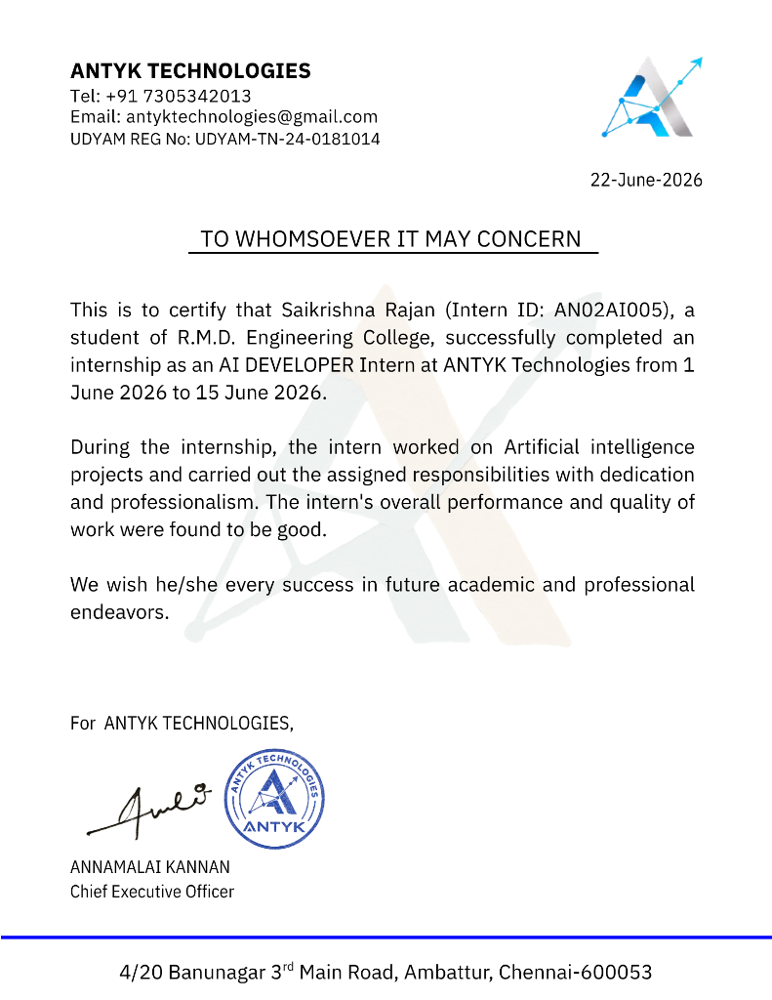

Industry InternshipAI DEVELOPER Internship
ANTYK Technologies • Ambattur, ChennaiSuccessfully completed the AI Developer internship working on Artificial Intelligence projects and completing assigned engineering responsibilities with dedication, professionalism, and high quality.